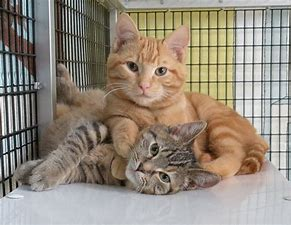
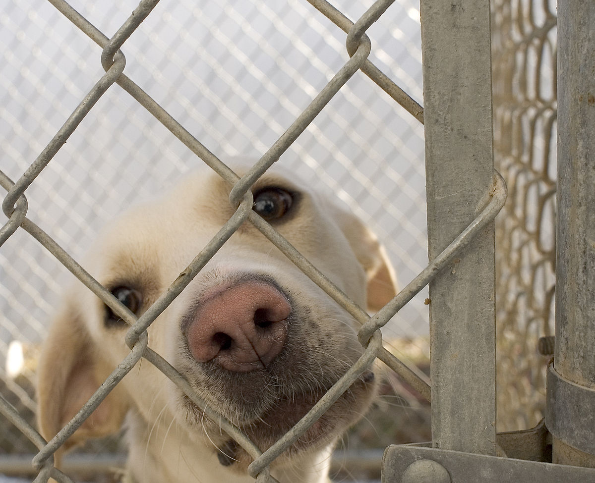
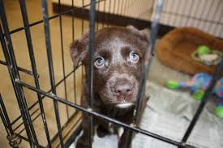

Explore our site
We here at Steven's County animal shelter want you to explore our site, so we can find these animals a home. Humans make the life of an animal by caring and loving on them. These animals will not be able to enjoy a good life if people do not choose to adopt them. The Steven's County Animal Shelter has a lot of animals who have either just arrived or have been at the shelter for over a month. Please help us find these animals a loving and caring home.
 Benefits of adopting a pet
- You are saving a life - Adopting a pet allows us to take more pets, so adopting a pet allows us to take in another pet that has been lost, abused, etc.
- You will save money - we will ensure that your pet is up to health before you take your animal home
- More love in your household - Animals bring out the love in your children for the pet, so having a pet in your home will bring out more love in your children (and even you)
- Animals are often housetrained - The animals are shelter takes in are usually older than puppies so the majority of the time the animals have left a previous family and are already housetrained
- Unconditional love - many pets in our shelter have had a non-ideal life, so having an owner that truly loves them will bring out love in a pet because you adopted them
Donations
If you would like to donate to help out the animal shelter (Donations help us take in more animals!), then please come by our office at 13640 W Solano Dr Litchfield Park, Arizona between the hours of 9 am and 5 pm Monday through Friday.